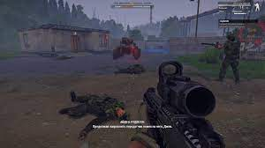
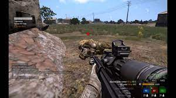
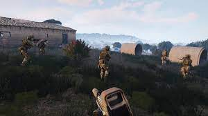
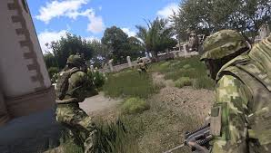
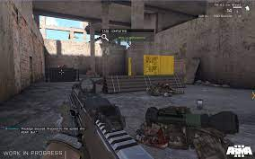

Arma 3
 Описание
игры Arma 3 — Это новый виток в жанре тактических военных симуляторов от независимой студии
Bohemia Interactive, создателей нашумевшей Operation Flashpoint. Arma 3 впитала в себя все самое лучшее
из предыдущих игр серии и привнесла множество инноваций. Новый физический движок позволит игроку
с невиданной ранее реалистичностью управлять боевыми действиями.
Описание
игры Arma 3 — Это новый виток в жанре тактических военных симуляторов от независимой студии
Bohemia Interactive, создателей нашумевшей Operation Flashpoint. Arma 3 впитала в себя все самое лучшее
из предыдущих игр серии и привнесла множество инноваций. Новый физический движок позволит игроку
с невиданной ранее реалистичностью управлять боевыми действиями.
Новая модель поведения техники, широчайший спектр оружия, от уже ставших классическими M16 и AK74 до прототипов,
еще не поступивших в широкое пользование, а так же долгожданная фанатами серии возможность плавать под водой.
После нескольких лет изнурительной войны, Европа стала последним пристанищем ослабленных в боях сил НАТО.
Остров Стратис захвачен противником с ближнего Востока и его завоевание даст гарантированное превосходство НАТО в данном регионе.
Началась операция «Магнитуда»: небольшая группа специально подготовленных солдат вместе с учеными под прикрытием
отправляются на остров в Средиземном море. Миссия под угрозой краха! Команда практически полностью уничтожена,
а главного героя, капитана Скотта Миллера, выбрасывает на берег вражеского острова.
Завершить операцию в его силах,
но на его пути встают все опасности современных военных действий, безжалостная окружающая среда и численное
превосходство врага. Обдумывать в арма 3 придется каждый шаг!
Скриншоты из игри:





Требования к игре:
-Операционная система: Windows Vista / 7 / 8
-Процессор: Intel Dual Core с тактовой частотой 2.4 ГГц
-Оперативная память: 2 Гб
-Место на жестком диске: 15 Гб
-Звуковое устройство: совместимое с DirectX 9.0с
-Видеокарта: с 512 Mб видеопамяти (NVIDIA GeForce 8800 GT / ATI Radeon HD 3830)
|
|---|
Скачать Arma 3
Статус:
Сиди:
Пири:
Процессор: 32 bita
Тип Релиза: RePack от xatab
Скачать через торрент:
Скачать без торрента:
|
|---|